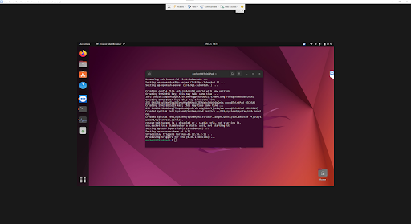
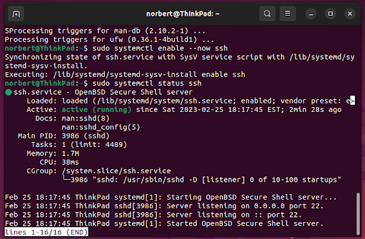
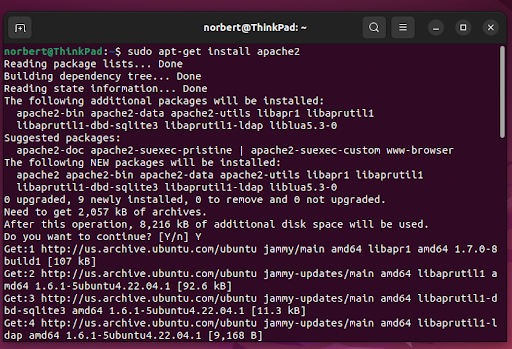
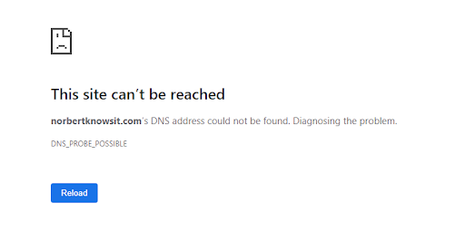
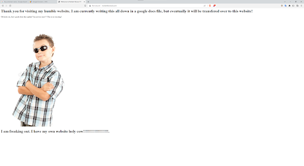

Today was a rollercoaster ride of emotions. Trying to get everything to work, failing, trying again, losing hope, and finally getting hit square in the head with that light bulb moment.
So what happened?
I got Ubuntu up and running and started to look into “hosting website from home” and immediately learned about LAMP, short for Linux, Apache, MySQL, and PHP. Obviously I’ve heard of Linux, it would be hard not to after installing Ubuntu. Apache was a new term for me, but I want to go over it in more detail later. MySQL will help me with databases, I know its worth learning as well due to the sheer amount of data that is processed in just the last second! And PHP… Well I know a lot of people get frustrated with PHP. So this will be a fun learning journey.
I realized that having to open up the ThinkPad every time I wanted to add something to the website would be a pain. So I set up TeamViewer between the two computers and use a password to gain access to the ThinkPad.
I found this website on creating the LAMP stack And started to follow along.
It looks like everything is going well. A lot of this looks foreign to me. There are a lot of words and key phrases that I can’t make heads or tails out of. I can only imagine what Docs: man:sshd(8) could mean. But the glory of living in the 21st century is that a quick google search can help me understand.
SSHD Stands for SSH Daemon which is the daemon program for ssh. I’m sure I’ll learn more about this as I move forward with the installation.
Next I wanted to download Apache. But what is Apache? It is open-source software which allows clients to access HTML files from servers. Essentially the middle man in facilitating who gets what. Apache communicates through HTTP servers and establishes a connection between the server and client’s web browser. So when you got on my website, the Apache software returns the following information.
The install was successful! That’s a relief. However, it only seems to work from my local network. Attempting to connect to this IP from my phone while on LTE did not resolve the webpage. But I assume this is because we haven’t set up PHP just yet, and our ports are not forwarded.
So next up we install PHP and its different dependencies. The website had me download all sorts of modules. From PHP, Libapache2 Mod PHP, PHP- MySQL, CGI, CURL, and PHP-JSON. The only one that did not installl was MCRYPT. And I’m not sure if that will cause problems later down the line…
The tutorial had me write down this command
$ sudo chown -R $
And the part where they put < your_username > was really tripping me up. I thought I was supposed to put my name inside the <> brackets. But after reading the help documents, it made sense. I was supposed to just leave them out as norbert:norbert. However, this has caused me to be curious about what the “chown” and “chmod” commands do.
An Error: Could not reliably determine the server’s fully qualified domain name, using 127.0.1.1 Set the ‘ServerName’ directive globally to suppress this message.
Currently playing around with different solutions. First thing I did was go back to the config file and replace NorbertKnowsIT.com with 10.0.0.188 since thats the IPV4 of the laptop. But that didn’t work. Then I tried setting it to the name ‘norbert@ThinkPad’ and that didn’t work either. I looked up my Public IP and set it to that, and also no luck. I found this website that recommends changing the directive globally so that is what I am trying next.
Unfortunately even after following the website's directions, it did remove the error, but it did not fix the problem. I am able to access the website through the 10.0.0.188 IP address, but I am not able to do it through the Domain Name I wanted: NorbertKnowsIT.com I had my Public IP address in the conf file, but after changing it back to NorbertKnowsIT.com, it still does not work. This is unfortunate.
I am looking at another resource to see if they have done anything different. Already they did something different by creating a Sudoer. Someone who can use Sudo Commands but not root?
I gave up a while later after trying different things with no results. When I was finished I talked with my friends about the website and how it was progressing. They told me that it's not possible to just own a domain for free and that you need to buy one
What. Why?
Anyways. Here you go google, take my $12.
So hopefully this is the start to many more “Aha!” moments in my IT career. I am looking forward to learning more about the home lab. The next steps are to get this website looking a little cleaner.
It looks like I am going to have to figure out a different workflow as writing all of this down in a google docs file is not the best course of action. It looks like its not possible to download the snippets I made, and the alternative is to “save them to Google Keep” which compresses the file down even further losing a lot of detail. Moving forward, I will have to figure out what is the best way of storing the snippets. Maybe locally on my computer, and in google docs notating where image1 image2 image3 should go. But even this system seems flawed.